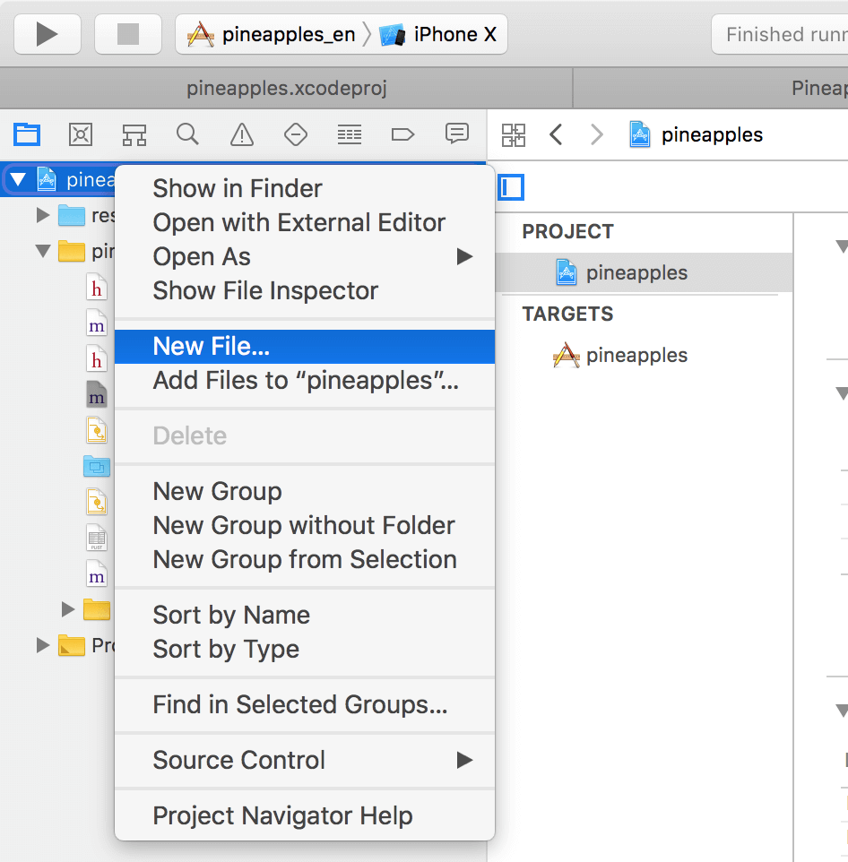
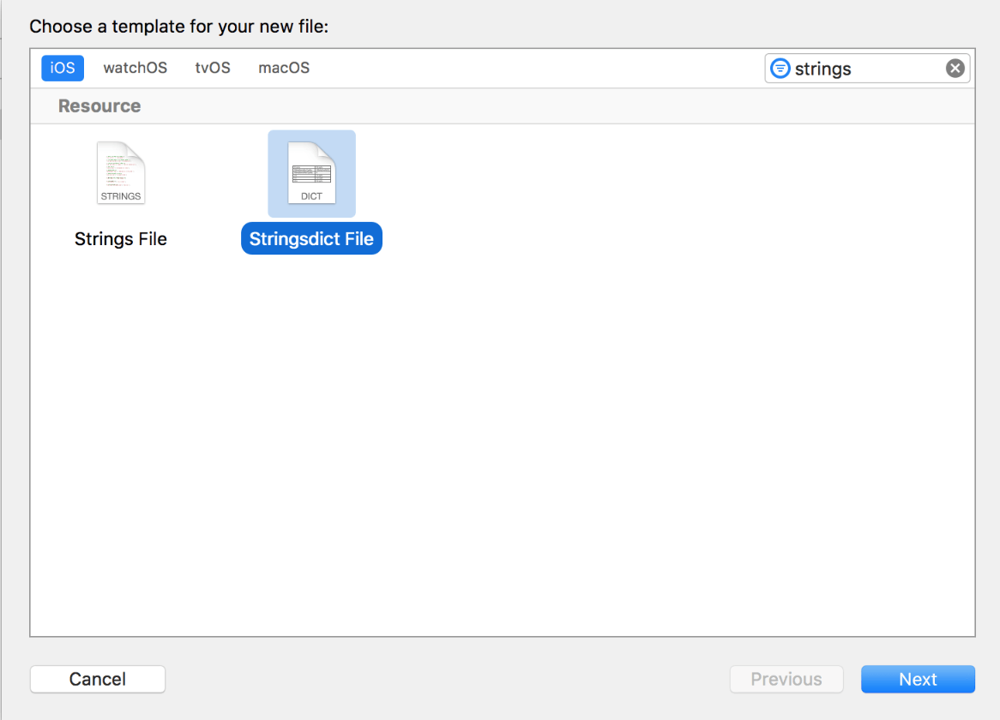
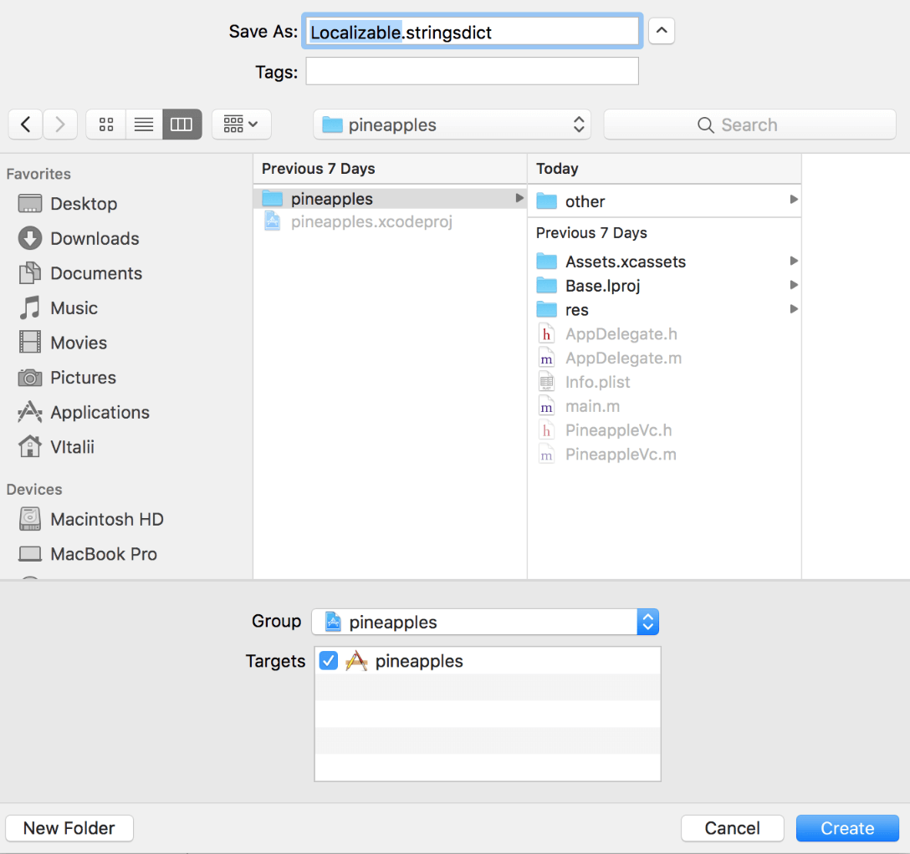
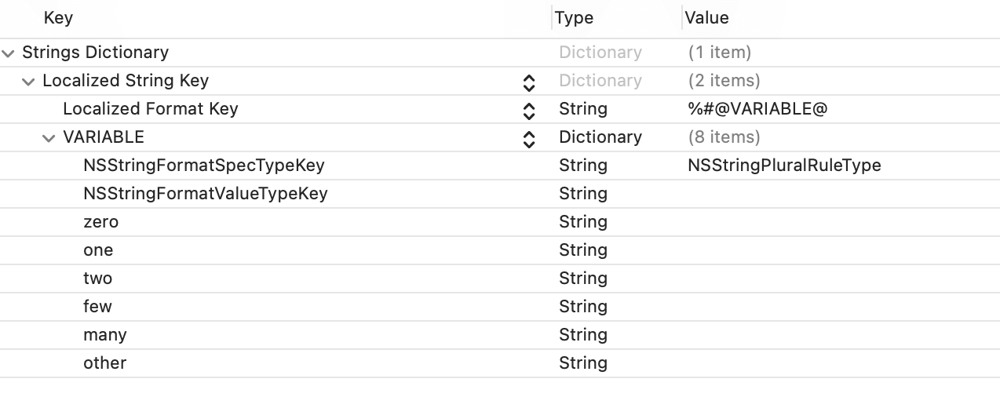
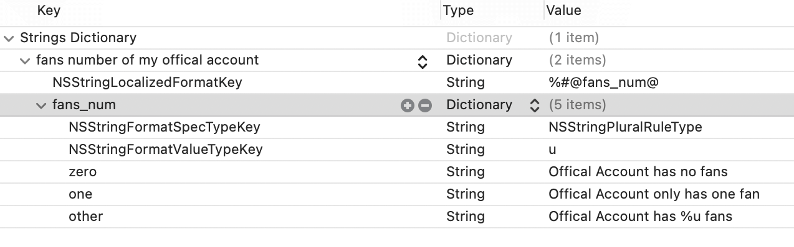
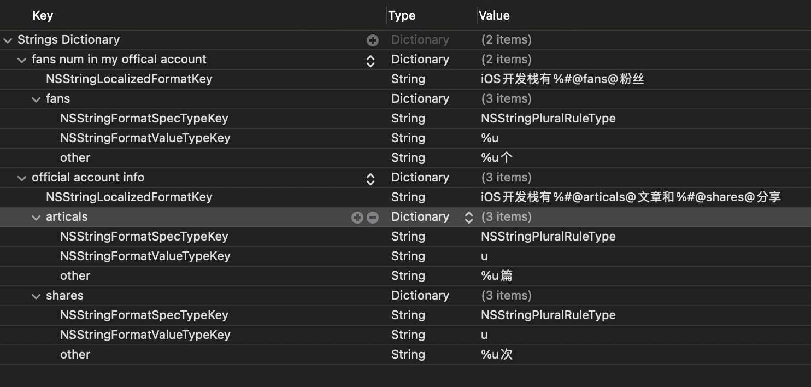
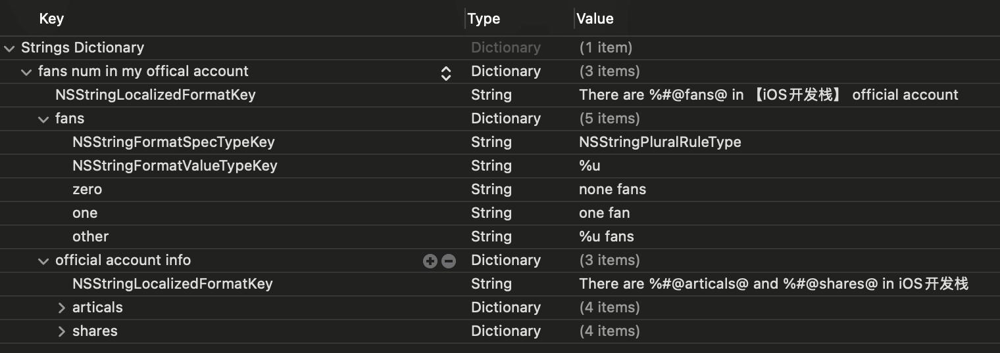

iOS项目国际化过程中对【名词复数】的处理方法和对其他文字的处理方法有些不同之处，这篇文章将从下面几个方面讲解一下项目中怎么处理名词复数。
- 什么不能像对其他语句一样对名词复数进行处理？
-
.stringsdict文件的使用方法和说明 iOS项目国际化过程中对【名词复数】的处理方法和对其他文字的处理方法有些不同之处，这篇文章将从下面几个方面讲解一下项目中怎么处理名词复数。 - 什么不能像对其他语句一样对名词复数进行处理？
.stringsdict文件的使用方法和说明
到公众号【iOS开发栈】学习更多SwiftUI、iOS开发相关内容。
错误的名词复数处理方式
iOS项目国际化主要是对项目中用到的文字进行本地化语言处理，这个方面的知识在前面几篇文章都有涉及，比如苹果官方的iOS App国际化工作流、使用Xib使App完成国际化功能。
普通文本可以大致看作1对1的翻译，比如说“iOS开发栈”->“iOS developers stack”，这种一对一的翻译通过.strings文件可以处理。
名词复数的多语言处理是更加复杂的翻译，因为不同的语言对不同数量的表达方式都不一样。分别以英文、中文表达【iOS开发栈】公众号有几个粉丝为例：
| 名词 | 数量 | 英文 | 中文 |
|---|---|---|---|
| Fan | 0 | There is none fan | 没有粉丝 |
| Fan | 1 | There is one fan | 有一个粉丝 |
| Fan | n(n>1) | There are n fans | 有n个粉丝 |
不同语言对不同数量的表达可以参考Language Plural Rules
如果要用.strings文件来处理名词复数的话，大概会写出这样的代码：
// 伪代码
let fans = ...
if fans == 0 {
NSLocalizedString("zero fans number of my offical account", comment: "The Fans Number of 【ios开发栈】is zero")
} else if fans == 1 {
NSLocalizedString("one fans number of my offical account", comment: "The Fans Number of 【ios开发栈】is one")
} else {
NSLocalizedString("other fans number of my offical account", comment: "The Fans Number of 【ios开发栈】is other")
}
如果每个用到名词复数的地方都这样写的话，项目中就会充斥着这种胶水代码，非常不利于维护。为了避免这种做法，我们可以利用Xcode自带的.stringsdict文件。
stringsdict
.stringsdict文件就是专门用来处理名词复数的plist文件。
创建.stringsdict文件
  
- 在项目目录右击选择New File或者使用快捷键⌘+N
- 新建一个Stringsdict File,并命名为
Localizable.stringsdict
stringsdict文件解析
 
左边是一个空的stringsdict文件，右边是用公众号粉丝数为例的stringsdict文件。
Localized String Key是一个文字常量,用在NSLocalizedString宏里面用来匹配多语言翻译，如NSLocalizedString("fans number of my official account", comment: "The Fans Number of 【ios开发栈】")。项目中有多少个需要翻译的名词复数就要有多少个Localized String Key。Localized Format Key对应的是包含名词复数的句子，其中的数字和名词在%#@和@中间。VARIABLE用%#@和@之间的代替。这是一个键值对，内容就是VARIABLE在不同数量下的表示规则。NSStringFormatSpecTypeKey指定复数规则的类型，固定为NSStringPluralRuleType表示复数规则类型。NSStringFormatValueTypeKey用来表示不同的数字类型，比方说整型是%d，无符号整型%u，具体可以查看String Format Specifierszero/one/two/few,many/other不同数量下名词复数的表现方式，有些语言只有其中几个比如汉语基本所有数量都可以用一种方式来表达（1个、2个、100个），英语有两种（one fan/many fans），更多的语言可以查看Language Plural Rules。
实战经验
Localized Format Key是一个语句，其中可以包含1个或1个以上的复数，每个都用%#@和@包围。- 每增加一个需要翻译的名词复数就要增加一个
Localized String Key。 - 设置
.stringsdict文件的多语言- 点击
Localizable.stringsdict文件 - 点击右上角文件检视器，选中第一个选项
the File inspector - 在Localization中增加、减少语言。
- 点击
 
上面是在中英文下对_iOS开发栈有n个粉丝_和_iOS开发栈有n篇文章和m次分享_的翻译。对这两个翻译的使用方法如下：
let fansNumLocalizableString = NSLocalizedString("fans num in my offical account", comment: "The Fans Number of 【ios开发栈】")
let fanNumStr = String.localizedStringWithFormat(fansNumLocalizableString, 3)
let offcialAccountInfo = NSLocalizedString("official account info", comment: "")
let accountInfoStr = String.localizedStringWithFormat(offcialAccountInfo, 10, 5)
到公众号【iOS开发栈】学习更多SwiftUI、iOS开发相关内容。
总结
通过这篇文章我们了解了为什么要对名词复数的国际化进行单独处理，和stringsdict文件的用法，相信你已经对名词复数的国际化有所了解，现在就去动手试试吧～